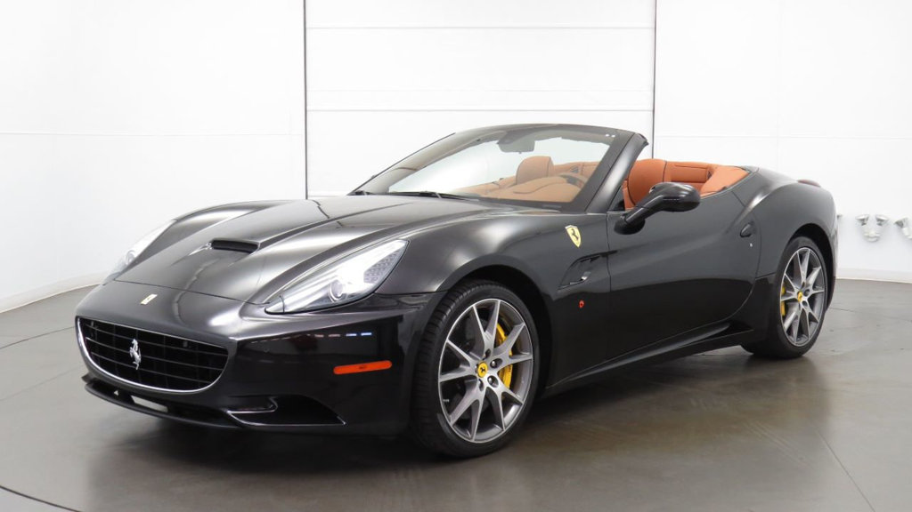
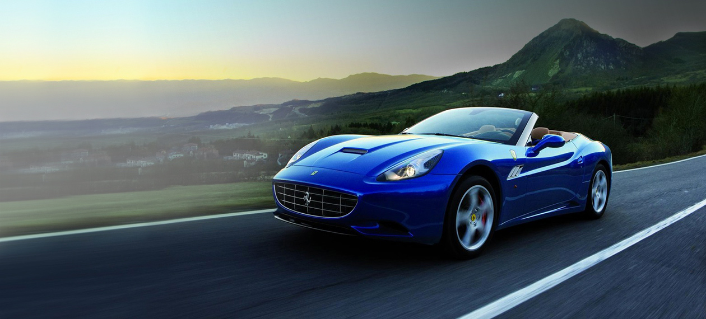

.jpeg)
Ferrari Californiađược ra mắt tại Triển lãm ô tô Paris 2008 . Theo tin đồn ngành công nghiệp, California ban đầu được bắt đầu như là một khái niệm cho một Maserati mới, nhưng kết quả chi phí để sản xuất chiếc xe dẫn Fiat nhóm để huy hiệu nó như một Ferrari để minh cho chi phí mua cao; công ty này bác bỏ điều này, tuy nhiên. California đại diện cho một mô hình mô hình mới, thứ tư cho công ty.
Chiếc Ferrari đầu tiên trang bị động cơ V8
Chiếc đầu tiên được trang bị hộp số ly hợp kép 7 tốc độ
Bản gốc năm 2010 của California có tốc độ tối đa 310 km / h (193 mph) và có thể tăng tốc từ 0 đến 100 km / h trong vòng 4 giây. Mặc dù mô hình này nặng hơn 180 kg (397 lb) và 30 PS (22 kW, 30 hp) kém hơn F430 động cơ giữa, California đạt 97 km / h (60 dặm / giờ) trong cùng thời gian với F430 do hộp số ly hợp kép.
.jpeg)
Bosch sản xuất hệ thống phun trực tiếp. Động cơ đã tiêu tốn 4.297 cm khối (262,2 cubic inch) và sử dụng xăng trực tiếp . Nó cung cấp 338 kW (453 bhp) ở 7.750 vòng / phút; mômen xoắn cực đại của nó được sản xuất là 485 Nm (358 lbf · ft) ở 5.000 vòng / phút. Kết quả 79 kW (106 bphp) trên mỗi lít dung tích động cơ là một trong những động cơ hút tự nhiên cao nhất, như các nhà sản xuất khác đã sử dụng tăng áp hoặc tăng áp để đạt được mức công suất tương tự. Hệ thống máy tính cơ thể được phát triển bởi Magneti Marelli Automotive Lighting